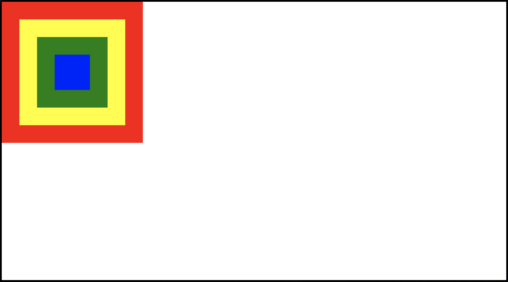
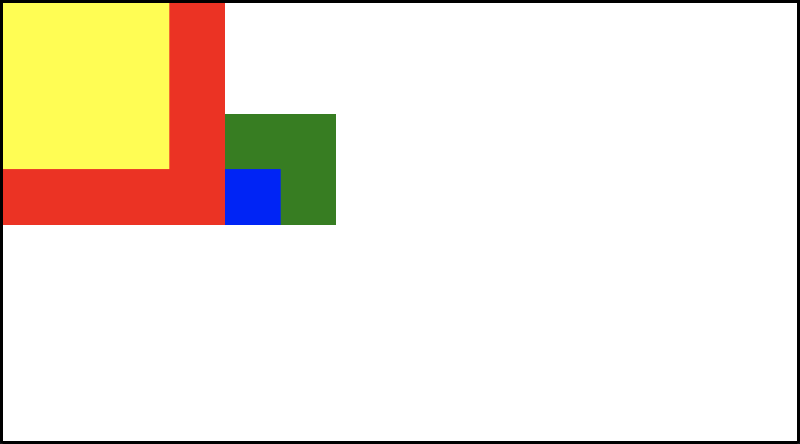
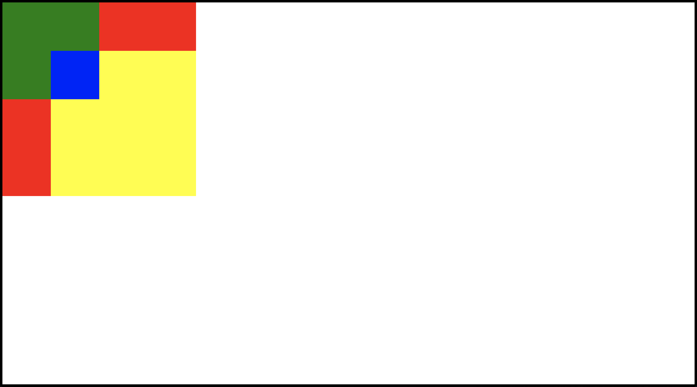
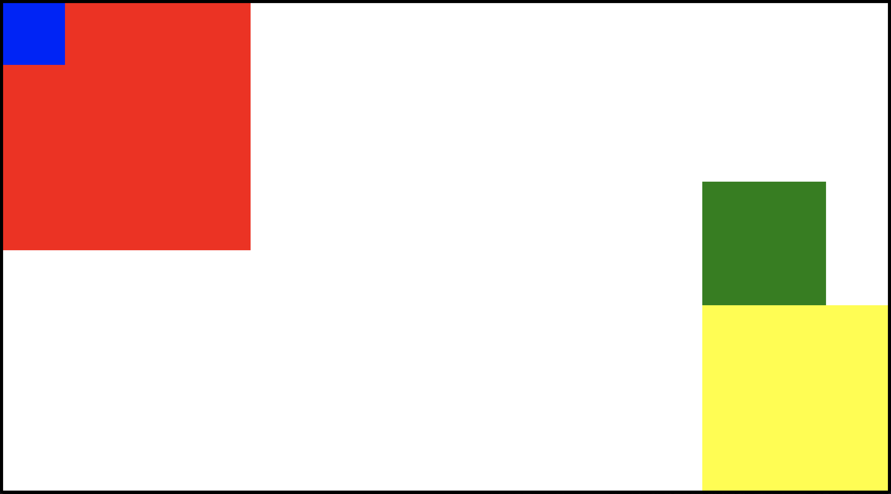

CSS Mocks
Part I: CSS Positioning
In this exercise, you’ve got an HTML file with a few divs inside of the body tag. Your goal is to modify the CSS so that you can make the page look like each of the following screenshots.
You should ONLY be modifying the CSS in this exercise: don’t change anything in the HTML file!
For a lot of these, there are many different ways to acheive the desired layout. Try to focus on using positioning, rather than other CSS concepts like margins, flexbox, or floats.
Our body tag
We’ve added some basic styles to the body tag, including a border, so that you can see where these elements should sit relative to the body.
Exercise 1
{kind=link}
{kind=link}
Exercise 3
{kind=link}
Exercise 4
{kind=link}
Exercise 5
{kind=link}
Part II: CSS Mocks
In this exercise, your goal is to create the three design elements depicted below. You can choose your own images for the later mocks, but otherwise you should try to make the styling as close to what you see as possible. Most importantly, don’t use any external CSS libraries, and no JavaScript! You should be writing all of the CSS you need yourself.
For this exercise, you will write the HTML and CSS from scratch—we don’t provide starter code for you.
If you need a refresher on CSS Transitions (which will be helpful for the third mock), check out our Online Course.
Mock 1

Note: You don’t need to implement the black circle that shows up on click! This is just how the Giphy app records clicks when you’re making a GIF.
Mock 2

Mock 3